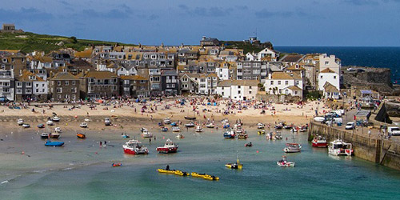

Bristol is famous for
What is Bristol known for? Find out and fall in love with our city.
Explore Bristol
Bristol's neighbourhoods reflect a diverse and exciting city.
 Explore the South West and Wales
Bristol is perfectly located for day trips across south-west England and Wales.
Maps and travel
How to get to Bristol and find your way around.
About Bristol
- The largest city in the South West
- Population of 449,300
- 90 minutes from London
- Easy access to nearby cities, beaches and rolling landscapes
- Georgian architecture, gritty graffiti and harbourside living